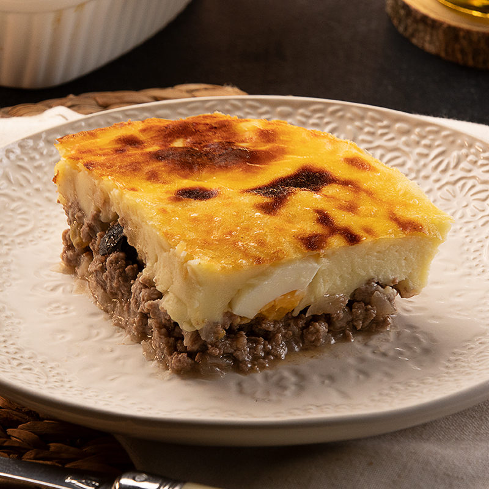

Pastel de Papas (Potato Pie)

Pastel de Papas (Potato Pie) is a popular Chilean dish made with layers of ground beef, mashed potatoes, and other ingredients. It is a hearty and flavorful dish that is perfect for a cold day.
Ingredients:
- 1 pound ground beef
- 1 onion, chopped
- 2 cloves garlic, minced
- 1 (14.5 ounce) can diced tomatoes
- 1 (10 ounce) can tomato sauce
- 1 tablespoon dried oregano
- 1 teaspoon ground cumin
- 1/2 teaspoon salt
- 1/4 teaspoon black pepper
- 3 pounds potatoes, peeled and quartered
- 1/2 cup milk
- 1/4 cup butter
- 1/4 cup grated Parmesan cheese
- 1/4 cup chopped fresh parsley
Instructions:
- Preheat oven to 375 degrees F (190 degrees C).
- In a large skillet, brown the ground beef over medium heat. Drain off any excess grease.
- Add the onion and garlic to the skillet and cook until softened.
- Stir in the diced tomatoes, tomato sauce, oregano, cumin, salt, and pepper. Bring to a simmer and cook for 15 minutes.
- While the meat sauce is cooking, cook the potatoes in a large pot of boiling salted water until tender. Drain the potatoes and return them to the pot.
- Add the milk, butter, and Parmesan cheese to the potatoes and mash until smooth.
- To assemble the pastel de papas, spread a thin layer of meat sauce in the bottom of a 9x13 inch baking dish.
- Top with a layer of mashed potatoes.
- Repeat layers, ending with a layer of mashed potatoes.
- Sprinkle the parsley over the top of the pastel de papas.
- Bake in the preheated oven for 30 minutes, or until the cheese is melted and bubbly.
Tips:
- For a richer flavor, use homemade ground beef.
- To make the pastel de papas ahead of time, assemble it as directed and cover it tightly with plastic wrap. Refrigerate for up to 24 hours. When ready to bake, remove the pastel de papas from the refrigerator and let it come to room temperature for 30 minutes before baking.
- To freeze the pastel de papas, assemble it as directed and cover it tightly with plastic wrap. Wrap the pastel de papas again in foil and freeze for up to 3 months. To bake, thaw the pastel de papas in the refrigerator overnight. Remove the plastic wrap and foil and bake at 375 degrees F (190 degrees C) for 45 minutes, or until the cheese is melted and bubbly.
Return to main page